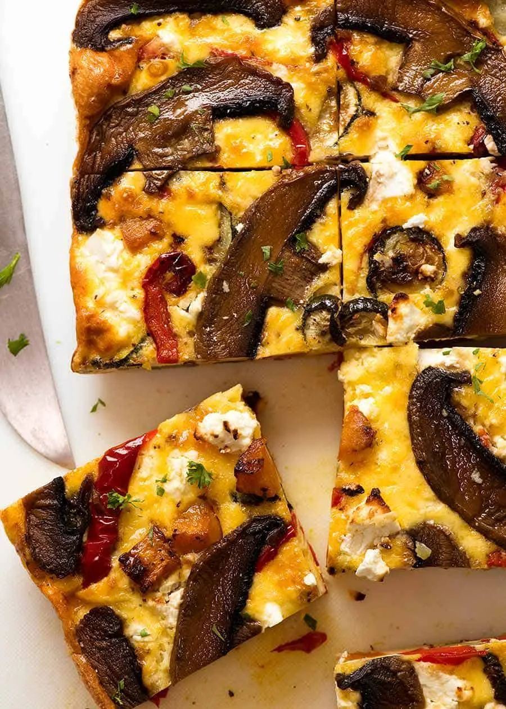

Baked Vegetable Frittata

- Meal
- Dinner
- Serves
- 6
- Protein
- egg — vegetarian
- Cook
- oven · 20 min active / 85 min total · easy
- Make-ahead / leftovers
- yes (fridge 5 days; freezes; good cold for lunches) / yes
- Mediterranean
- yes
- WW tier
- moderate
- Status
- Trying out (probation)
RecipeTin Eats' baked frittata: sweet potato, zucchini, and red bell pepper roasted with olive oil, garlic, and herbs, then baked into a tall slab of eggs and cheese topped with feta and mushrooms. Slice into squares — dinner tonight, lunches all week.
Ingredients
Roasted vegetables
- 3 Tbsp olive oil
- 3 garlic cloves, minced
- 2 1/4 tsp Italian seasoning or mixed dried herbs
- 1 tsp salt + 3/4 tsp pepper
- 1 lb sweet potato or butternut squash, 3/4-inch cubes
- 3 zucchini, sliced into 1/2-inch rounds
- 1 1/2 large red bell peppers, sliced
Egg mixture
- 15 eggs
- 1 cup + 2 Tbsp whole milk (or half milk, half cream)
- 3/4 tsp salt + 3/4 tsp pepper
- 2 1/4 cups shredded cheddar
- 4–5 oz mushrooms, sliced (optional)
- 4 oz feta, crumbled (optional)
- To serve: green salad, whole-grain toast or roasted potatoes
Method
- Heat the oven to 430°F. Toss the vegetables on a large sheet pan with the oil, garlic, herbs, salt, and pepper. Spread out and roast 25 minutes without flipping. Cool 5 minutes.
- Lower the oven to 350°F. Grease a 9x13 pan and line with parchment, leaving an overhang.
- Whisk the eggs, milk, salt, and pepper.
- Spread two-thirds of the vegetables in the pan, pour in the eggs, sprinkle with cheddar, and top with the remaining vegetables.
- Scatter feta and mushrooms on top; drizzle the mushrooms with a little olive oil.
- Bake 40–45 minutes until the center is just set. Rest 5 minutes, lift out by the parchment, and cut into squares.
Notes
- Scaled ×1.5 from RecipeTin Eats' 10 eggs / 8x10 pan / 8–12 slices into a 9x13 (about the same depth, so the bake time barely changes — check at 40 minutes).
- Nagi says full-fat cream or milk; milk keeps it moderate instead of heavy.
- Sweet potato instead of Nagi's pumpkin (she lists sweet potato as the swap).
- Kid-mild. Pull the mushrooms off one corner for anyone who objects.
- First baked-egg dinner in the deck; not a clone of Shakshuka (eggs in sauce) or Breakfast Burritos.
- Mediterranean ✓: olive oil, eggs in place of meat, lots of vegetables, sweet potato — 4 of 4. moderate for 2+ cups cheese.